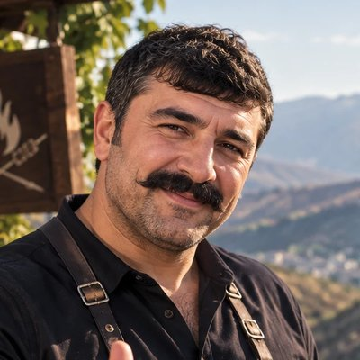

4–6порций
4–12 чмаринад
20–25 минна углях
Легкосложность

«Хорошему мясу не нужен уксус и кетчуп. Соль, лук, перец и правильный жар — вот и весь секрет».
Ингредиенты
- Свиная шея (с прослойками жира)2 кг
- Репчатый лук4–5 шт.
- Соль крупная≈ 1,5 ст. л.
- Чёрный перец, свежемолотый1 ч. л.
- Сушёный базилик (рейган) или тимьян (урц)1 ч. л.
- Паприка сладкая1 ч. л.
- Для подачи: лаваш, зелень, помидоры, перец, баклажаныпо вкусу
Приготовление
- Нарезка. Нарежьте шею крупными кусками 5–6 см. Жир не срезайте — он даёт сочность.
- Лук. Половину лука натрите или порежьте мелко и хорошо помните руками, чтобы дал сок. Вторую половину — кольцами.
- Маринад. Смешайте мясо с солью, перцем, паприкой и зеленью, добавьте лук. Перемешайте руками 2–3 минуты. Никакого уксуса!
- Отдых. Накройте и уберите в холодильник минимум на 4 часа, лучше на ночь. За час до жарки достаньте мясо.
- Угли. Разожгите дрова (лучше виноградная лоза или фруктовые). Ждите, пока угли покроются белым пеплом и пламени не будет.
- Шампуры. Нанизывайте плотно, кусок к куску, жирной стороной наружу. Лук с мясом не нанизывайте — он сгорит.
- Жарка. Держите на высоте ~10–15 см от углей, переворачивайте каждые 2–3 минуты. Если капает жир и вспыхивает — сбрызните угли водой, а не мясо.
- Готовность. Надрежьте самый толстый кусок: сок должен быть прозрачным. Обычно 20–25 минут.
- Овощи. Параллельно запеките на углях баклажаны, помидоры и перцы — для хоровац-салата.
- Подача. Снимайте мясо прямо на лаваш, сверху маринованный лук и зелень. Накройте вторым лавашем на 2 минуты — пусть «дойдёт».
Советы Варпета
- Мясо солите сразу — соль и лук делают маринад, больше ничего не нужно.
- Не жарьте на открытом огне: хоровац любит ровный жар углей.
- Баклажаны, перцы и помидоры после запекания очистите, порубите с чесноком, солью и зеленью — это классический хоровац-салат.
- Хоровац не ждёт: ешьте горячим, пока лаваш пропитан соком.